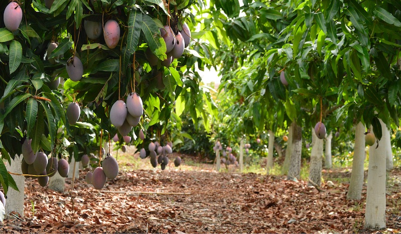
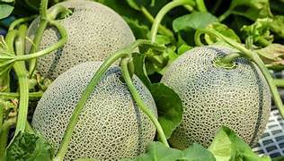
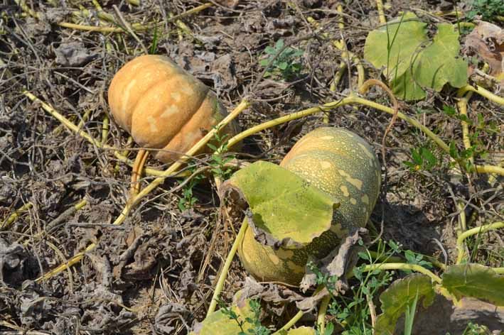

Otros cultivos
Entre otros cultivos que se siembran en este territorio tenemos...
Cultivo del Arroz

Desde el punto de vista de la seguridad alimentaria, el cultivo del arroz es una actividad esencial. Sin embargo, a pesar de saber cómo crece el arroz, todavía se siguen usando prácticas de cultivo anticuadas, que resultan ineficaces tanto en términos de agricultura industrial como por su impacto medioambiental.
Algunos de los costes medioambientales del cultivo de arroz son la inundación de tierras para convertirlas en arrozales, las enormes emisiones de gases de efecto invernadero y el uso excesivo de productos químicos. Afortunadamente, existen numerosos métodos de cómo cultivar arroz de forma más inteligente, rentable y sostenible.
¿En Qué Clima Se Cultiva El Arroz?
Como cualquier otro cultivo, necesita ciertas condiciones para prosperar. Los requisitos más importantes para el crecimiento del arroz están relacionados con el clima y el suelo. A continuación, analizaremos las condiciones para el cultivo del arroz y en qué regiones cabe esperar las mejores cosechas.
Clima Adecuado Para El Cultivo De Arroz
Originario de regiones tropicales, el arroz es un cultivo de temporada cálida que requiere calor y humedad constantes para crecer. Sin embargo, puede cultivarse como planta anual en climas cálidos, aunque no se resida en los trópicos.
Durante la temporada de cultivo, la mejor temperatura oscila entre 21°C y 37°C (70°F y 99°F). Las temperaturas del suelo por encima de los 37 grados Celsius (99 grados Fahrenheit) tienen un efecto perjudicial. Sólo se puede cultivar arroz donde las mínimas nocturnas se mantienen en 15°C (60°F) o más durante un mínimo de tres meses al año.
¿Por qué es tan importante esto?
La germinación depende de la temperatura, por lo que las mínimas para el cultivo de arroz en crecimiento deben estar siempre por encima de esa marca.
Las necesidades de agua del arroz en crecimiento superan con creces las de cualquier otro cultivo. Por eso, sólo en lugares con una pluviosidad anual mínima de 45 pulgadas (115 cm) se puede cultivar arroz. Las mejores condiciones para el cultivo del arroz se dan en zonas con una precipitación media anual de 175 a 300 cm. Los arrozales deben estar inundados al menos 10 semanas durante la temporada de cultivo, con una profundidad que oscila entre 25 mm (1 pulgada) en la fase de trasplante y 150 mm (6 pulgadas) durante todo el ciclo de vida del cultivo.
Suelo Ideal Para El Cultivo Del Arroz
¿En qué tipo de suelo crece el arroz? Si bien es cierto que puede crecer en casi cualquier tipo de suelo, tiene más éxito en suelos ricos y bien drenados que puedan retener la humedad. Todos los tipos de suelo, desde los arenosos hasta los arcillosos, son aptos siempre que tengan un pH óptimo para el cultivo del arroz de entre 5 y 7,5. Los suelos arcillosos y limosos, que suelen ser inadecuados para otros cultivos, son ideales para el cultivo de arroz por su capacidad para retener el agua. Como el cultivo necesita mucha agua, es mejor plantarlo en suelos fáciles de inundar.
¿Cómo Se Siembra El Arroz?
La siembra de arroz a gran escala exige una planificación minuciosa, una ejecución precisa y una supervisión constante. Para garantizar una cosecha próspera, las grandes empresas agrícolas deben tomar las siguientes medidas a la hora de sembrar arroz:
- elija un lugar con terreno llano y suficientes recursos hídricos. El suelo debe ser rico en nutrientes y estar bien drenado;
- prepare el terreno, eliminando las piedras, la basura y la maleza del arrozal. El arado y la nivelación proporcionarán una superficie uniformemente lisa y plana. Corrija el suelo con materia orgánica y fertilizantes según considere oportuno;
- elija semillas de primera calidad para la siembra del arroz, con selección localizada para obtener un alto rendimiento y resistencia a las enfermedades;
- proteja las semillas contra enfermedades y plagas utilizando fungicidas y pesticidas;
- plante las semillas con una sembradora mecánica para garantizar un espaciado uniforme. La profundidad ideal para sembrar las semillas es de aproximadamente una pulgada (2-3 cm), y la distancia de plantación recomendada entre hileras de arroz es de 8-10 pulgadas (20-25 cm).
con una sembradora mecánica para garantizar un espaciado uniforme. La profundidad ideal para sembrar las semillas es de aproximadamente una pulgada (2-3 cm), y la distancia de plantación recomendada entre hileras de arroz es de 8-10 pulgadas (20-25 cm).
con una sembradora mecánica para garantizar un espaciado uniforme. La profundidad ideal para sembrar las semillas es de aproximadamente una pulgada (2-3 cm), y la distancia de plantación recomendada entre hileras de arroz es de 8-10 pulgadas (20-25 cm).
Cómo Se Cultiva El Arroz: Métodos Más Usados
Los métodos de cultivo del arroz van de los manuales a los altamente automatizados, de los tradicionales a los más avanzados. Pero la mayoría de los países siguen confiando en métodos de cultivo probados que han existido durante generaciones. Veamos los métodos más típicos
-
Cultivo húmedo.
-
Cultivo en seco.
-
Cultivo en tierras altas.
-
Cultivo aeróbico (aeropónico).
-
Sistema de Intensificación del Arroz.
-
Cultivo hidropónico del arroz.
El arroz crece tradicionalmente en zonas inundadas, o arrozales. Primero se vierte agua (a varios centímetros de profundidad) en los arrozales hasta que las plantas quedan sumergidas y luego, antes de la cosecha, se drena la plantación.
La siembra de arroz en seco se hace en campos que no se inundan con agua. Este método es bueno para cultivar arroz en regiones con precipitaciones reducidas o falta de suministro de agua.
Es adecuado para zonas, como colinas o montañas, donde la topografía no permite inundar el suelo. El cultivo en terrazas permite cultivar en pendientes, provocando una erosión mínima del suelo.
Se emplea en lugares donde el agua escasea o inundar no es una opción. El cultivo crece en un suelo que drena eficazmente y sólo se riega con moderación cuando es necesario.
Este tipo de cultivo del arroz prioriza la densidad de plantas, el estado del suelo y el riego para aumentar el rendimiento. Requiere plantar las plántulas a una edad más temprana, con más espacio entre ellas y con menos agua que los métodos convencionales.
Es una técnica de cultivo que combina el cultivo húmedo con la piscicultura. El cultivo de arroz con peces tiene la ventaja de que los peces se crían junto a los cultivos y sus heces sirven de abono.
¿Por Qué Es Mejor Si El Arroz Se Cultiva En Agua?
Como cultivar arroz requiere de mucha agua para prosperar, es preferible cultivarlo en agua en lugar de en tierra. Esta forma de cultivo tiene muchas ventajas:
- los cultivos pueden acceder fácilmente al agua que necesitan, desperdiciándose menos agua debido a la evaporación;
- los arrozales mantienen constante el nivel del agua, que es crucial para el crecimiento y el desarrollo de las plantas;
- la mayoría de las malas hierbas y plagas perecen en el agua;
- al mismo tiempo, el agua sirve de hábitat a numerosas especies acuáticas útiles para el medioambiente.
Ciertas variedades de peces y aves prosperan en el humedal donde el arroz se cultiva e, incluso, actúan como controladores naturales de plagas.
¿Cuánto Tarda En Crecer El Arroz?
La variedad del arroz, las condiciones de cultivo y las prácticas agrícolas pueden influir en el tiempo que tardan las plantas en madurar. La mayoría de las variedades necesitan entre 105 y 150 días desde la siembra hasta la cosecha. Sin embargo, algunos tipos pueden tardar hasta 180 días en crecer. En general, los cultivos trasplantados maduran más rápidamente que los sembrados directamente.
El arroz puede cultivarse todo el año y cosecharse varias veces al año en lugares tropicales con calor constante y abundantes precipitaciones. En cambio, en las zonas con cuatro estaciones bien diferenciadas, el periodo de cultivo del arroz suele coincidir con la estación húmeda (monzónica), que proporciona precipitaciones suficientes y temperaturas favorables para el cultivo.
Técnicas De Cosecha Y Postcosecha Del Arroz
La cosecha del arroz, que consiste en separar los granos de la planta, es una fase esencial del proceso de cultivo. El momento de la cosecha tiene un impacto significativo, tanto en la cantidad como en la calidad de la cosecha. Normalmente se cosecha cuando los granos han alcanzado su tamaño y madurez.
Tiempo De Cosecha Del Arroz
Para las plantas sembradas directamente, el mejor momento para cosechar es entre 110 y 120 días después de la siembra (DAS); mientras que, para las plantas trasplantadas, es entre 100 y 110 días después del trasplante (DAT).
Procesos Y Tipos De Cosecha Del Arroz
La cosecha del arroz consta de varios pasos, que pueden realizarse manualmente de uno en uno o todos a la vez con una cosechadora. Al cosechar manualmente con un cuchillo afilado o una hoz, es fundamental cortar el tallo a no más de 4-5 cm del suelo. De este modo, los agricultores eliminan las larvas del barrenador del arroz, que, de otro modo, quedarían en los rastrojos y podrían causar graves pérdidas de cosecha en la siguiente temporada de cultivo del arroz, incluso del 100% en el caso de la plaga más destructiva de Asia, el barrenador del arroz rayado.
Una cosechadora suele cortar la cosecha, depositarla en el sistema de trilla, trillarla, limpiarla y depositarla en un vagón. Al cosechar, la cosechadora deja una hilera de paja a su paso.
Procedimientos Posteriores A La Cosecha
Una vez recogida la cosecha del arroz, hay que dar algunos pasos más. Si utiliza una cosechadora, todas estas operaciones se realizan simultáneamente. Pero, si opta por la recolección manual, tendrá que realizar los siguientes pasos en orden:
- Trilla: separación del grano de arroz del resto del cultivo cosechado. Debe hacerse lo antes posible tras la recolección para evitar que el grano se vuelva a humedecer y minimizar su rotura;
- Limpieza: eliminación de la materia no madura, vacía y ajena al grano. Antes de la limpieza, secar los granos (si es necesario) y luego limpiarlos cuidadosamente para evitar daños;
- Transporte: transporte de la cosecha a la trilladora;
- Secado en el campo: secado de la cosecha al aire libre en el arrozal;
- Apilado (o amontonamiento): almacenamiento a corto plazo de la cosecha;
- Embolsado: llenado de sacos con grano trillado para su almacenamiento y transporte.
El secado en el campo y el apilado, dos prácticas habituales después de la cosecha del arroz, no están aconsejadas debido al rápido deterioro de la calidad de la cosecha y a las importantes pérdidas que pueden acarrear.
Cultivo del Mango
El cultivo del mango es una actividad agrícola de gran importancia en muchas regiones. Esta fruta tropical, conocida por su sabor dulce y exótico, requiere cuidados específicos para su producción. En este artículo, exploraremos los aspectos clave del cultivo del mango, desde la selección del terreno hasta la cosecha.
El cultivo del mango: técnicas y consejos para una producción exitosa
El cultivo del mango es una actividad que requiere atención a diferentes factores para obtener una producción exitosa. Algunas técnicas y consejos son fundamentales para lograrlo. Uno de los aspectos más importantes es la selección del terreno, ya que el mango necesita un suelo bien drenado y profundo, con un pH entre 5.5 y 7.5.
Además, es crucial realizar un adecuado manejo del riego, ya que el mango es sensible a la falta de agua durante etapas clave de su desarrollo. La aplicación de abonos orgánicos o químicos de forma balanceada y en las cantidades adecuadas también es fundamental para asegurar un crecimiento óptimo de los árboles y una buena calidad de frutos.
Otro punto a considerar es el control de plagas y enfermedades, para lo cual se deben implementar medidas preventivas y correctivas de manera constante. Asimismo, es importante llevar a cabo podas de formación y mantenimiento, con el fin de promover un buen desarrollo de la planta y facilitar la cosecha.
En resumen, el cultivo del mango requiere una planificación detallada y la implementación de buenas prácticas agrícolas para lograr una producción exitosa, satisfaciendo así las demandas del mercado y obteniendo frutos de alta calidad.
¿Cuál es el proceso de cultivo del mango?
El proceso de cultivo del mango comienza con la selección de un terreno adecuado que tenga buena exposición solar y un suelo bien drenado. Preparación del terreno, donde se realizan labores de limpieza, nivelación y enmienda del suelo para asegurar las condiciones óptimas para el crecimiento de la planta. Luego se procede a la siembra de los árboles de mango, preferiblemente en la época de lluvias para facilitar el establecimiento de las plantas. Durante el proceso de crecimiento, es importante realizar labores de mantenimiento como el riego controlado, la poda y la aplicación de nutrientes.
Una vez que los árboles han alcanzado la madurez, comienza la etapa de producción de los mangos, que requiere cuidados especiales para garantizar frutos de calidad. Por último, se lleva a cabo la recolección de los mangos, la cual debe realizarse en el momento óptimo de maduración de los frutos para conservar su sabor y textura.
En cuanto a maquinaria agrícola, durante el cultivo del mango se pueden utilizar tractores para labores de preparación del suelo, sistemas de riego automatizado para el manejo del agua, y maquinaria de recolección específica para el momento de cosecha. La aplicación de tecnología en el proceso de cultivo del mango puede ayudar a optimizar los recursos y aumentar la productividad.
¿Cuál es el proceso de cultivo del mango?
El cultivo del mango requiere de varios pasos importantes. En primer lugar, se debe seleccionar un terreno con suelos profundos y bien drenados para poder plantar los árboles. Luego, se realiza la preparación del terreno a través de labores como arado, nivelación y surcado.
Una vez que los árboles de mango han crecido, es importante llevar a cabo la poda para favorecer la formación de una estructura fuerte y balanceada, así como para facilitar la aireación y el acceso a la luz.
Durante el proceso de cosecha, se utilizan herramientas específicas para recolectar los mangos, como por ejemplo pértigas con cestas o tijeras de podar. Es importante cosechar los frutos en el punto óptimo de madurez para garantizar su calidad.
En cuanto al manejo de plagas y enfermedades, se pueden emplear maquinaria agrícola como pulverizadores para la aplicación de productos fitosanitarios de forma precisa y eficiente.
Por último, es fundamental realizar un adecuado manejo postcosecha para conservar la calidad de los mangos, lo cual puede incluir procesos de lavado, selección, clasificación y almacenamiento en condiciones controladas.
En resumen, el proceso de cultivo del mango implica una serie de pasos clave que van desde la siembra hasta la cosecha y el manejo postcosecha, cada uno de los cuales requiere cuidados específicos y, en algunos casos, el uso de maquinaria agrícola especializada.
¿Cuánto tiempo le toma a un árbol de mango dar frutos?
Un árbol de mango generalmente comienza a dar frutos entre los 3 y 5 años después de ser plantado. Sin embargo, este tiempo puede variar dependiendo de factores como la variedad del mango, las condiciones del suelo y el clima. Es importante tener en cuenta que los árboles de mango necesitan un cierto grado de madurez para poder producir frutos de manera constante y de calidad, por lo que es recomendable realizar prácticas de manejo adecuadas, como la poda y la fertilización, para favorecer su desarrollo.
¿Qué tipo de clima necesita el mango?
El mango es una fruta que necesita un clima cálido para crecer adecuadamente. Se desarrolla mejor en regiones tropicales y subtropicales, con temperaturas que oscilen entre los 25 y 35 grados Celsius. Además, requiere de una temporada seca para la floración y una temporada húmeda para el desarrollo de frutos. Este tipo de clima permite que el mango alcance su madurez de forma óptima y produzca frutos de buena calidad.
¿Cuál es el proceso de poda y fertilización recomendado para el cultivo del
mango?
El proceso de poda del mango se recomienda realizarla en la época seca, eliminando ramas dañadas y favoreciendo la aireación. La fertilización debe ser equilibrada, aplicando abonos orgánicos y minerales según las necesidades del suelo y la etapa de crecimiento de la planta.
Cultivo de Melon
El cultivo del melón es una actividad gratificante y llena de satisfacciones para aquellos que buscan adentrarse en el mundo de las huertas y la autosustentabilidad. Con su dulce sabor y refrescante textura, el melón es una fruta versátil que se puede disfrutar tanto en ensaladas como en postres. Si estás interesado en aprender cómo cultivar y cuidar tus propios melones, has llegado al lugar adecuado. En este artículo, te proporcionaremos una guía completa que abarca desde la siembra hasta la cosecha, pasando por todos los cuidados necesarios para obtener melones deliciosos y saludables. ¡Prepárate para embarcarte en una emocionante aventura de cultivo de melones en tu propia huerta!
¿Qué cuidados debe tener una planta de melón?
El cultivo del melón requiere de ciertos cuidados para asegurar un buen desarrollo y una cosecha exitosa. A continuación, te presentamos una guía completa sobre los cuidados que debe tener una planta de melón.
- Riego: El melón es una planta que necesita un riego constante, especialmente durante el periodo de crecimiento y desarrollo de los frutos. Se recomienda regar de manera regular, evitando encharcamientos que puedan pudrir las raíces.
- Luz: El melón requiere de al menos 6 horas diarias de luz solar directa para su óptimo crecimiento. Ubica las plantas en un lugar soleado y evita la sombra de otros cultivos o estructuras.
- Suelo: El melón prefiere suelos bien drenados, ricos en materia orgánica y con un pH entre 6 y 7. Antes de la siembra, es recomendable enmendar el suelo con compost o abono orgánico para mejorar su estructura y nutrición.
- Temperatura: El melón es una planta de clima cálido que requiere temperaturas entre 20 y 30 grados Celsius para su crecimiento óptimo. Evita las heladas y las temperaturas extremas.
- Abonado: Durante el cultivo del melón, es importante realizar fertilizaciones periódicas para asegurar un suministro adecuado de nutrientes. Utiliza un fertilizante rico en nitrógeno durante la etapa de crecimiento vegetativo y uno rico en fósforo y potasio durante la etapa de floración y fructificación.
- Poda: La poda del melón se realiza para controlar el crecimiento de la planta y promover una mejor producción de frutos. Se recomienda eliminar los brotes laterales y limitar la cantidad de frutos por planta para obtener frutos de mayor calidad.
- Control de plagas y enfermedades: El melón puede ser afectado por diversas plagas y enfermedades como pulgones, trips, mildiu y oidio. Realiza monitoreos regulares y aplica tratamientos preventivos o curativos según sea necesario.
Recuerda que cada variedad de melón puede tener requerimientos específicos, por lo que es importante seguir las recomendaciones del fabricante de semillas o consultar a un experto en agricultura.
¿Cuánto tiempo tarda una planta de melón en dar fruto?
El melón es una fruta jugosa y refrescante que se cultiva en muchas partes del mundo. Para aquellos que deseen cultivar sus propios melones, es importante entender el tiempo que tarda una planta de melón en dar fruto.
El tiempo que tarda una planta de melón en dar fruto puede variar dependiendo de diversos factores, como la variedad de melón, las condiciones climáticas, el tipo de suelo y el cuidado que se le brinde a la planta.
En general, el proceso desde la siembra de las semillas hasta la cosecha de los melones puede tomar alrededor de 70 a 90 días. Sin embargo, es importante tener en cuenta que este tiempo puede variar y que algunos factores pueden acelerar o retrasar el proceso.
Uno de los factores que puede influir en el tiempo de maduración de los melones es la variedad de melón que se esté cultivando. Algunas variedades de melón maduran más rápido que otras, por lo que es importante investigar y seleccionar la variedad adecuada según las preferencias y las condiciones de cultivo.
Las condiciones climáticas también juegan un papel importante en el tiempo que tarda una planta de melón en dar fruto. El melón es una planta que requiere de temperaturas cálidas para crecer y madurar adecuadamente. Generalmente, las temperaturas óptimas para el cultivo del melón oscilan entre los 24°C y 32°C. Si las temperaturas son demasiado bajas o demasiado altas, el proceso de maduración puede retrasarse.
Otro factor a considerar es el tipo de suelo en el que se cultiva el melón. El suelo debe ser fértil, bien drenado y rico en nutrientes para que la planta de melón pueda crecer de manera saludable y producir frutos de buena calidad. Además, es importante mantener el suelo húmedo pero no excesivamente mojado, ya que el exceso de agua puede afectar el crecimiento de la planta.
En cuanto al cuidado de la planta de melón, es importante proporcionarle el riego adecuado, especialmente durante los períodos de sequía. Además, se recomienda fertilizar la planta de melón regularmente para asegurar un crecimiento saludable. También es importante controlar y prevenir enfermedades y plagas que puedan afectar a la planta.
Cultivo de Auyama
En el mundo de la huerta y la autosustentabilidad, el cultivo de auyama se ha convertido en una excelente opción para aquellos que desean iniciar su propio jardín. La auyama, también conocida como calabaza o zapallo, es una planta versátil y resistente, perfecta para principiantes en la agricultura. En esta guía completa, te enseñaremos paso a paso cómo cultivar auyama, desde la siembra hasta la cosecha, para que puedas disfrutar de sus deliciosos frutos en tu propia huerta. Así que prepárate para descubrir todos los secretos de este fascinante cultivo y convertirte en un experto en el cultivo de auyama.
¿Cómo se siembra la auyama paso a paso?
La siembra de la auyama es un proceso sencillo que puede ser realizado por principiantes en la agricultura. A continuación, te presentamos una guía paso a paso para que puedas cultivar esta planta de manera exitosa.
Paso 1: Preparación del terreno
El primer paso para sembrar auyama es preparar el terreno adecuadamente. Se debe escoger un lugar soleado con buen drenaje. Remueve las malas hierbas y realiza un arado profundo para aflojar la tierra.
Paso 2: Selección de semillas
Es importante seleccionar semillas de buena calidad para obtener buenos resultados en el cultivo de auyama. Busca semillas de variedades resistentes a enfermedades y de buen rendimiento.
Paso 3: Siembra de las semillas
Realiza surcos en el terreno con una separación de aproximadamente 2 metros entre ellos. Coloca las semillas en los surcos, dejando una distancia de 1 metro entre cada semilla. Cubre ligeramente las semillas con tierra.
Paso 4: Riego adecuado
Después de sembrar las semillas, es importante regar el terreno de manera adecuada. La auyama necesita un riego constante para su crecimiento óptimo. Mantén la tierra húmeda, pero evita el encharcamiento.
Paso 5: Cuidado y mantenimiento
Durante el crecimiento de la planta, es importante realizar labores de cuidado y mantenimiento. Controla las malas hierbas para evitar la competencia con la auyama por nutrientes y agua. También es recomendable aplicar fertilizantes orgánicos para mejorar el desarrollo de la planta.
Paso 6: Protección contra plagas y enfermedades
La auyama puede ser afectada por diversas plagas y enfermedades. Es importante monitorear regularmente la planta y tomar medidas preventivas para evitar su aparición. Utiliza productos orgánicos o químicos recomendados para el control de plagas y enfermedades.
Paso 7: Cosecha
La auyama estará lista para ser cosechada cuando su cáscara esté dura y resistente. Utiliza un cuchillo afilado para cortarla del tallo. Deja que las auyamas se sequen al sol durante unos días antes de almacenarlas en un lugar fresco y seco.
- Preparación del terreno
- Selección de semillas
- Siembra de las semillas
- Riego adecuado
- Cuidado y mantenimiento
- Protección contra plagas y enfermedades
- Cosecha
Con esta guía paso a paso, podrás cultivar auyama de manera exitosa, disfrutando de sus beneficios nutricionales y su delicioso sabor en tus comidas.
¿Cuánto tiempo dura la auyama para dar fruto?
La auyama, también conocida como calabaza o zapallo, es una planta de la familia de las cucurbitáceas que se cultiva por su fruto comestible. Es una hortaliza versátil que se utiliza en una amplia variedad de platos y tiene un alto valor nutricional.
El tiempo que tarda la auyama en dar fruto depende de varios factores, como el clima, la variedad de la planta y las condiciones de cultivo. En general, la auyama tarda entre 90 y 120 días en madurar completamente desde la siembra de la semilla.
Es importante tener en cuenta que la auyama es una planta que necesita un clima cálido para crecer adecuadamente. Las temperaturas ideales para su cultivo oscilan entre los 20 y 30 grados Celsius. Además, requiere de abundante luz solar y de un suelo bien drenado y rico en nutrientes.
El primer paso para cultivar auyama es seleccionar una variedad adecuada para tu región y tus necesidades. Existen diferentes tipos de auyama, algunas más grandes y otras más pequeñas, algunas de piel verde y otras de piel anaranjada. Es recomendable elegir una variedad que se adapte a las condiciones de tu zona y al tipo de platos que deseas preparar.
Una vez seleccionada la variedad, se debe preparar el terreno de cultivo. Es recomendable realizar una labor de arado profundo y agregar abono orgánico para enriquecer el suelo. Luego, se pueden sembrar las semillas directamente en el suelo o en macetas, teniendo en cuenta la profundidad adecuada y dejando espacio suficiente entre plantas.
Durante el proceso de crecimiento de la planta, es importante mantener un riego regular para asegurar que la auyama reciba suficiente agua. Sin embargo, es importante evitar el exceso de humedad, ya que puede favorecer el desarrollo de enfermedades y pudrición de las raíces.
Además del riego, es recomendable realizar un manejo adecuado de las malezas y proteger las plantas de posibles plagas y enfermedades. También se puede aplicar fertilizantes orgánicos o químicos de acuerdo a las necesidades de la planta.
A medida que la auyama crece, es normal que aparezcan flores en la planta. Estas flores son necesarias para la polinización y posterior formación del fruto. Una vez que las flores son polinizadas, el fruto comenzará a desarrollarse y crecerá gradualmente hasta alcanzar su tamaño y madurez completa.
Para determinar si la auyama está lista para ser cosechada, se puede observar el color de la piel y la consistencia de la misma. Además, se puede probar golpeando suavemente la superficie del fruto y escuchando un sonido hueco. Una vez que la auyama está madura, se puede cortar del tallo con cuidado, dejando un pedazo de tallo para prolongar su tiempo de conservación.
Referencias
https://vida-sustentable.com/como-se-cultiva-la-auyama-paso-a-paso/